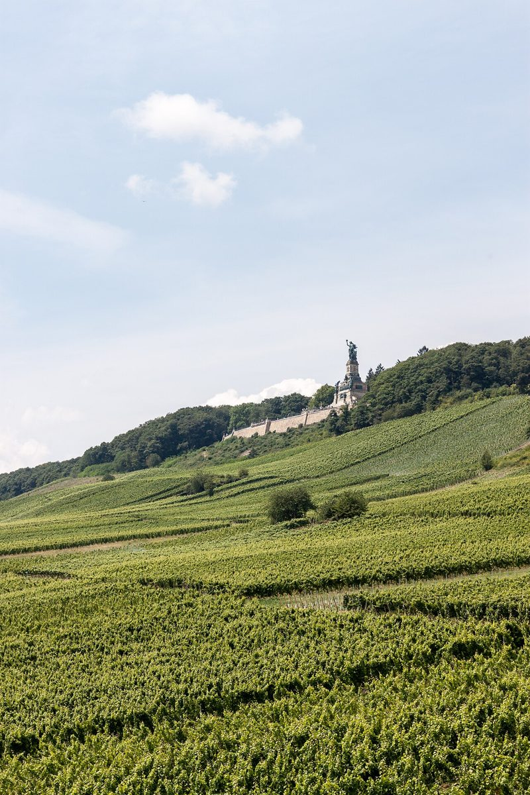

Entdecke die Schönheit der Rheingau Weinberge

Die Rheingau Weinberge sind eines der bekanntesten Weinanbaugebiete Deutschlands und ein echter Geheimtipp für Weinliebhaber und Naturfreunde. Die Region, die sich entlang des Rheins erstreckt, bietet nicht nur atemberaubende Landschaften, sondern auch eine reiche kulturelle Geschichte. Hier sind einige Tipps, um das Beste aus deinem Besuch im Rheingau herauszuholen.
Anreise zum Rheingau
Der Rheingau ist gut mit dem Auto, der Bahn oder auch dem Schiff zu erreichen. Wenn du mit dem Auto anreist, kannst du die malerische Route entlang des Rheins genießen. Mit der Bahn gelangst du bequem über Wiesbaden oder Frankfurt in die Region. Eine besondere Art der Anreise ist auch eine Schifffahrt auf dem Rhein, die dir einen einzigartigen Blick auf die Weinberge bietet.
Beste Reisezeit
Der Rheingau ist zu jeder Jahreszeit ein Besuch wert, aber die beste Zeit, um die Weinberge in voller Pracht zu erleben, ist zwischen Frühling und Herbst. Im Frühling erwacht die Natur zu neuem Leben, und im Herbst sind die Weinberge von goldenen Farben geprägt. Der Sommer eignet sich besonders gut für Wanderungen und Weinproben im Freien.
Highlights im Rheingau
1. Eberbach Abbey: Das ehemalige Zisterzienserkloster ist ein beeindruckendes architektonisches Meisterwerk und bietet Einblicke in die Geschichte des Weinbaus im Rheingau.
2. Rheinsteig-Wanderweg: Dieser Wanderweg führt durch die Weinberge und bietet spektakuläre Aussichten auf den Rhein und die umliegende Landschaft.
3. Weingüterbesuch: Ein Besuch bei einem der vielen familiengeführten Weingüter ist ein Muss. Hier kannst du lokale Weine probieren und mehr über den Weinbau erfahren.
4. Rüdesheim am Rhein: Dieser charmante Ort ist bekannt für seine engen Gassen, das Niederwalddenkmal und die Seilbahn, die dich zu einem der besten Aussichtspunkte der Region bringt.
5. Schloss Johannisberg: Dieses historische Schloss ist nicht nur ein architektonisches Highlight, sondern auch ein wichtiges Weingut, das eine lange Tradition im Weinbau hat.
Kulinarische Genüsse
Die Küche im Rheingau ist geprägt von regionalen Spezialitäten und traditionellen Gerichten. Probier unbedingt die berühmten Rheingauer Rieslinge, die perfekt zu den lokalen Gerichten wie Zwiebelkuchen oder Spundekäs passen. In den zahlreichen Weinlokalen und Restaurants kannst du auch Gerichte mit regionalen Zutaten wie Rheinfisch oder Wild genießen.
Ein Besuch im Rheingau ist ein Erlebnis für alle Sinne – von der malerischen Landschaft über die köstlichen Weine bis hin zu den kulturellen Schätzen. Pack deine Koffer und entdecke die Schönheit der Rheingau Weinberge!
Haiktec
- Bayerische Alpen Entdecken: Der ultimative Reiseführer für Naturliebhaber
- Prüfungsvorbereitungs-Tracker für Studierende
- Gastfreundschaft mit Gewinn: 7 bewährte Strategien für kleine Restaurants und Cafés
Text mit KI erstellt und automatisch geprueft.